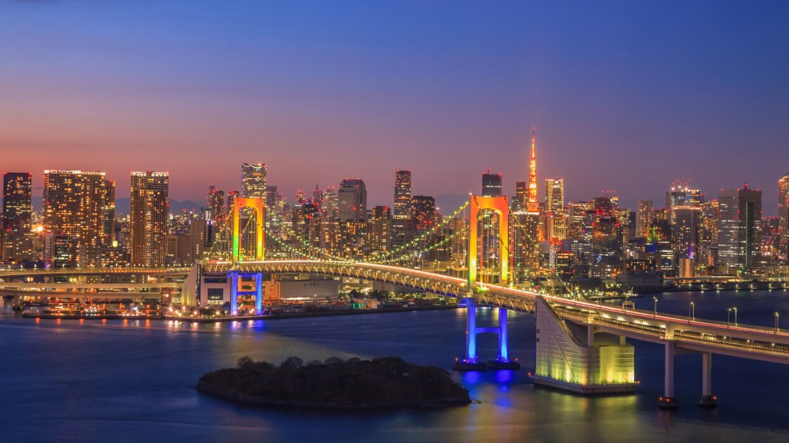

La fête du travail au Japon
La fête du travail ou Kinro Kansha no Hi (勤労感謝の日) est célébrée le 23 novembre au Japon. Ce jour de fête nationale est chômé et sert à remercier les travailleurs pour leur assiduité dans l'effort de production du pays. Cette journée permet également de célébrer Thanksgiving au Japon.
Journée chômée pour la majorité des salariés japonais, le 23 novembre est le jour de la fête du travail au Japon, précisément le moment de l'année où l'on exprime sa reconnaissance envers les travailleurs. On remercie d'abord les professions qualifiées de prioritaires et d'indispensables pour la société : le corps médical et enseignant, les pompiers, les policiers et plus largement les personnes aidantes. Même si ce jour est annoncé comme férié sur le calendrier national, il n'a que peu d'impact pour les touristes et les non-travailleurs car l'ensemble des commerces, musées, jardins et autres sites publics restent ouverts le 23 novembre au Japon. Les transports en commun fonctionnent également normalement, à la fréquence d'un dimanche. Seule la sphère privée de l'entreprise est réellement concernée par cette fête chômée où les employés de bureau bénéficient en général d'un jour de repos.
Pourquoi la date du 23 novembre ?
En France et en Europe, la fête du travail est célébrée le 1er mai, synonyme de jour chômé, de vente de bouquets de muguet et de manifestations dans les rues en faveur des droits des travailleurs. Cette portée syndicaliste et politique ne se retrouve pas au Japon car la date du 23 novembre correspond d'abord à une ancienne célébration shintoïste. Baptisée Niiname-sai (新嘗祭), la fête des récoltes d'automne est associée au monde paysan qui remercie les divinités kami pour les moissons fructueuses obtenues. À cette occasion, l'empereur du Japon fait offrande et consomme le riz nouveau qui vient d'être récolté. Cette fête est instituée à une date fixe en 1873 lorsque l'empereur Meiji (1852 - 1912) décide de se référer désormais au calendrier grégorien.
En 1948, à la suite de la défaite du Japon à l'issue de la Seconde Guerre mondiale, les forces d'occupation américaines souhaitent minimiser l'influence du shintoïsme dans le calendrier des évènements annuels. De cette façon, le 23 novembre japonais perd officiellement son caractère sacré et shinto pour se rapprocher de l'esprit de Thanksgiving aux États-Unis (qui est fêté à la même période). Le jour de la gratitude envers les travailleurs baptisée Kinro Kansha no Hi (勤労感謝の日) en japonais (ou Labour Thanksgiving Day en anglais) entre ainsi au calendrier national en tant que fête du travail au Japon. Certains sanctuaires, comme le Yoshida-jinja à Kyoto, continuent aujourd'hui de célébrer Niiname-sai le 23 novembre.
Une absence de festivités
Il faut rester attentif au calendrier et bien connaître les dates de jours fériés au Japon pour remarquer quelque chose de différent ce jour-là. En effet, que ce soit pour remercier les travailleurs ou bien pour célébrer Thanksgiving, peu d'évènements remarquables sont organisés le 23 novembre. Les employés en congés profitent plutôt de ce jour de repos pour :
- aller contempler les koyo rouges des érables car la saison bat son plein dans les régions les plus peuplées ;
- admirer les illuminations hivernales qui commencent à s'éclairer à la nuit tombée ;
- ou bien faire du lèche-vitrine devant les décorations de Noël des magasins.
Des dessins, des origamis ainsi que des cartes de remerciement sont également confectionnés par les enfants qui les distribuent par exemple à leurs enseignant(e)s, aux pompiers et aux policiers du quartier. Il n'y a en général pas de grande réunion familiale prévue ; certains restaurants ou
grands hôtels de la capitale proposent pour les expatriés américains la possibilité de déguster un repas traditionnel de Thanksgiving avec de la dinde.
Fête discrète qui se déroule à l'intérieur des cercles sociaux au Japon, la journée de remerciement des travailleurs passe presque inaperçue pour les touristes qui ne risquent pas ce jour-là de connaître un mouvement de grève !
Source : Kanpai